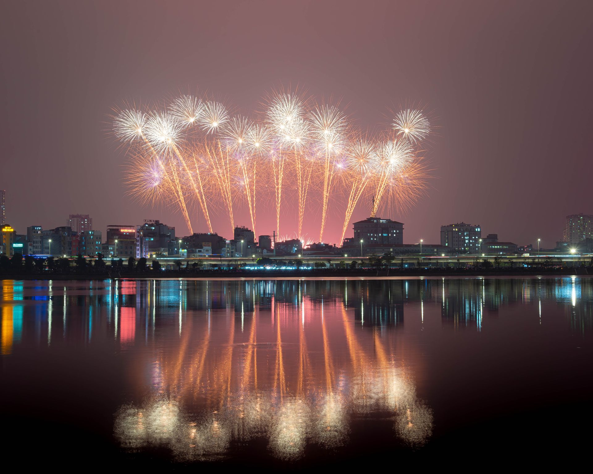

New Year · Festival displays · Remote arrays
Hamburg — shoots worldwide
A firework gives you four seconds. The schedule gives you all night — if you have read it. I photograph displays from the firing schedule outwards: positions surveyed in daylight, every segment planned before the first shell is lit.
The show is the brief
I do not control the show. The display company fires it, the weather edits it, and my whole job is to be standing in the one right place when it happens — with the right settings already on the camera.
Every booking starts with the firing schedule: the segment list, the shell classes, the timings. From it I build the night's plan — which position covers which segment, where the remote cameras go, and how many frames each segment honestly allows. The table below is the practice's standard planning example, a city New Year river show. It is also, segment for segment, the show logged in File 01.
If a show is shortened by wind, or a shell misfires, that goes in the frame log the client receives — reported with the show, never cropped out of the story.
| Seg | Segment | Clock | Duration | Burst class |
|---|---|---|---|---|
| 1 | Opening salute | 00:00 – 02:00 | 2:00 · 120 s | C — Strobe & crossette |
| 2 | Peony garden | 02:00 – 07:00 | 5:00 · 300 s | A — Peony & chrysanthemum |
| 3 | Willow quiet set | 07:00 – 10:30 | 3:30 · 210 s | B — Willow & brocade |
| 4 | Crossette crescendo | 10:30 – 15:00 | 4:30 · 270 s | C — Strobe & crossette |
| 5 | Finale barrage | 15:00 – 17:00 | 2:00 · 120 s | D — Finale barrage |
| Total show | 00:00 – 17:00 | 17:00 · 1,020 s |
Segment names and timings follow the display company's schedule for the reference show. Your show's schedule replaces this table line for line — the method does not change.
Plan the night before it fires
Two printed tables drive this planner: the starting settings for each burst class, and the frame cadence — how often a frame can honestly be exposed in each class. Set how much of the show you are covering, and the plan is laid out segment by segment.
| Class | Aperture | Bulb hold | ISO | Why |
|---|---|---|---|---|
| A — Peony & chrysanthemum | f/11 | ≈ 4 s | 100 | One clean burst per frame |
| B — Willow & brocade | f/8 | ≈ 6 s | 100 | Long trails need the longer hold |
| C — Strobe & crossette | f/11 | ≈ 3 s | 100 | Short hold keeps strobe pistils separate |
| D — Finale barrage | f/16 | ≈ 2 s | 100 | Densest light of the night — stop down |
| Class | One frame per | Reason |
|---|---|---|
| A — Peony & chrysanthemum | 12 s | Bursts spaced by the firing rhythm |
| B — Willow & brocade | 15 s | Trails must clear before the next frame opens |
| C — Strobe & crossette | 10 s | Fast shells, fast cadence |
| D — Finale barrage | 20 s | Halved on purpose — see the finale note in the planner |
Exposure & show planner
The planner reads Tables T1, S1 and T2 as printed above — change a table and the plan changes with it. Frames per segment = segment duration ÷ the cadence for its class.
One clean burst per frame; the hold ends as the trails fade.
A plan is a ceiling, not a promise: smoke drift, a shortened show or a misfire rate all spend frames the plan cannot get back. The frame log records what the night actually allowed — see File 01, where this exact plan met its show.
What a night costs
The fee table is printed in full, and the estimator below reads its rates from the table itself. What moves the price: camera count and position access first — a second manned position costs more than a second night of remotes — then travel beyond 80 km, then rush licensing.
| Line | Basis | Rate |
|---|---|---|
| Display-night coverage | One manned position, per night | €1,150 |
| Remote camera | Per camera, per night — placed & recovered under escort | €190 |
| Position survey & schedule read | Per display — daylight survey, plan and frame log template | €260 |
| Second manned position | Per night — a second photographer, second angle | €480 |
Booking estimator
Build the night you need. This is a planning figure from Table F1, not a quote — the confirmed price follows the survey, and it follows the printed table.
Weather terms, printed before you book: if the display company cancels for weather, the survey fee stands, the night fee is not charged, remotes are not deployed and not charged, and the re-fire date is held at the same rates for 12 months. File 03 in the shows is those terms, applied.
Services register
| Service | Client | Basis | Status |
|---|---|---|---|
| Display coverage | City events offices · display companies | Per night, Table F1 | Open — New Year 2026: one of two positions left |
| Remote camera arrays | Display companies · festival organisers | Per camera per night | Open |
| Media commissions | Press & picture desks | Per show, licence included for the commissioning desk | Open |
| Festival season contracts | Festival organisers | Per season, survey per site | Waitlist — 2027 season |
The record, counted
| 46 | Displays photographedNew Year, harbour festivals, city anniversaries, summer shows |
| 11 | New Year midnightsThe one night of the year this practice is built around |
| 3 | Shows weather-cancelledAll three re-fired and shot — the cancellations are in the log, not edited out of it |
| 27 | Misfire frames kept & reportedShells that failed, recorded in the client's frame log as failures |
| 0 | Shows shot without the firing scheduleNo schedule, no booking. The rule has never been bent |
“He sent us the frame log the same night — including the two shells that didn't fire. Nobody else has ever reported our own show back to us that honestly. The archive uses his frames, and his log, every year.”